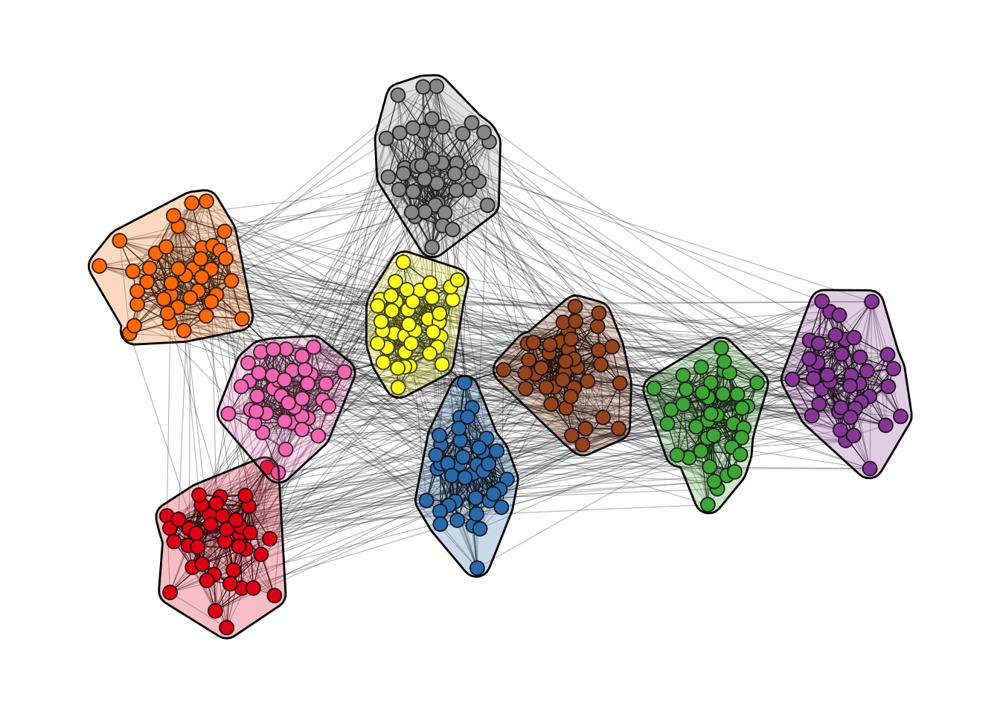
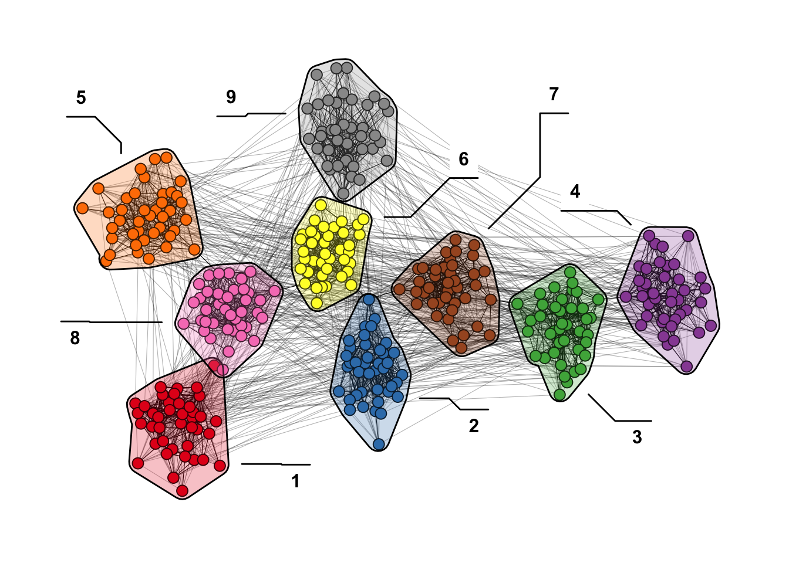
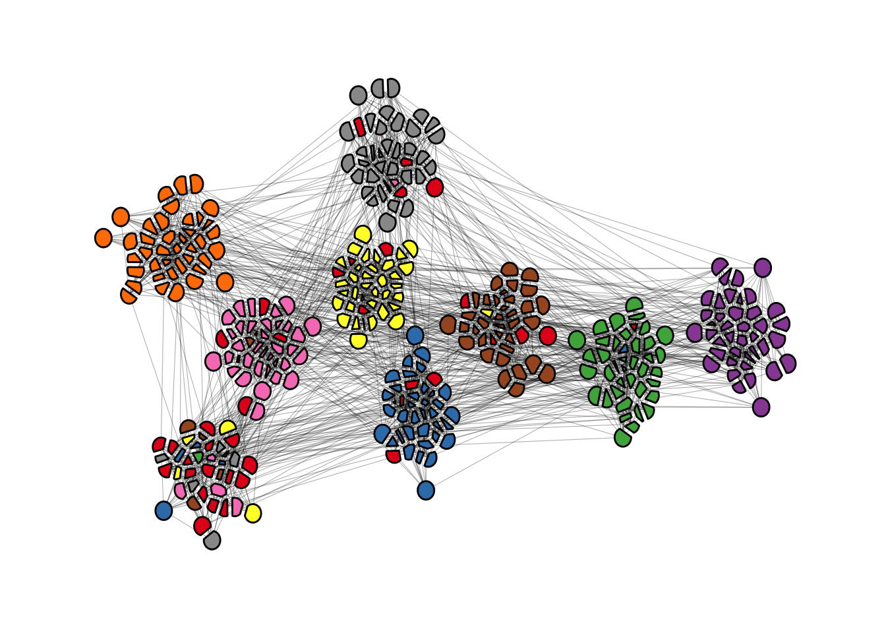
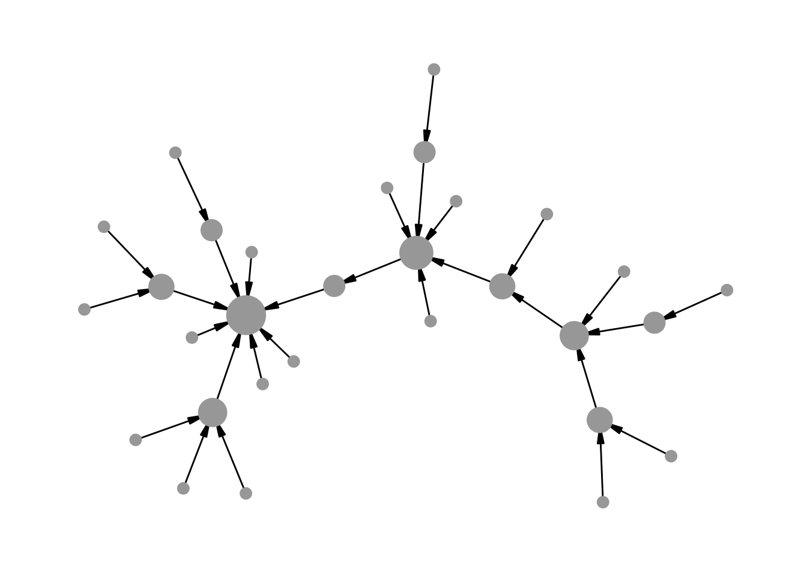
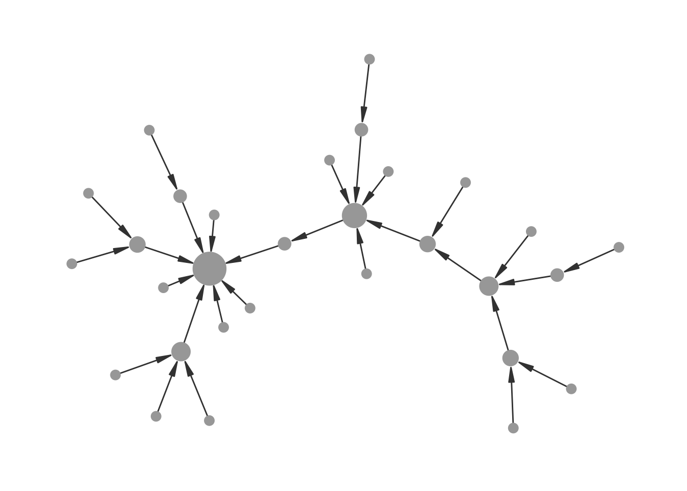
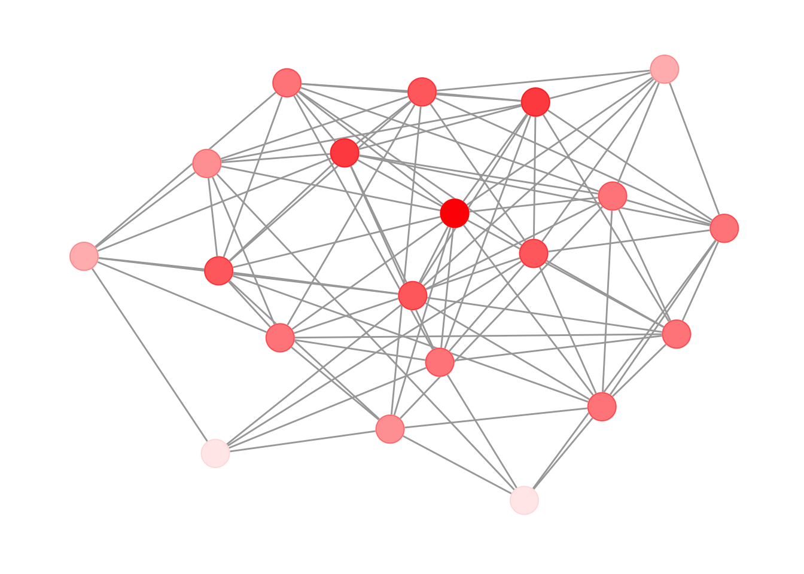
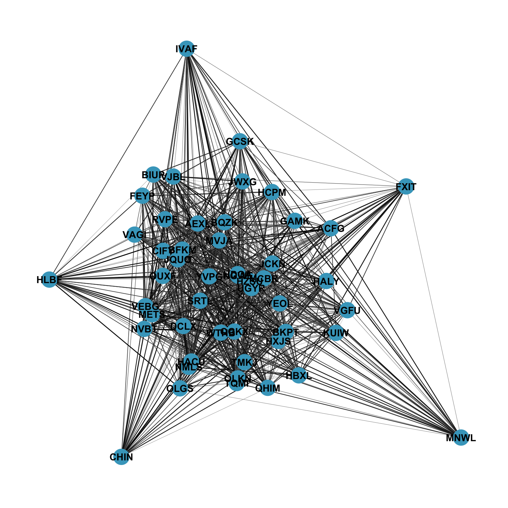
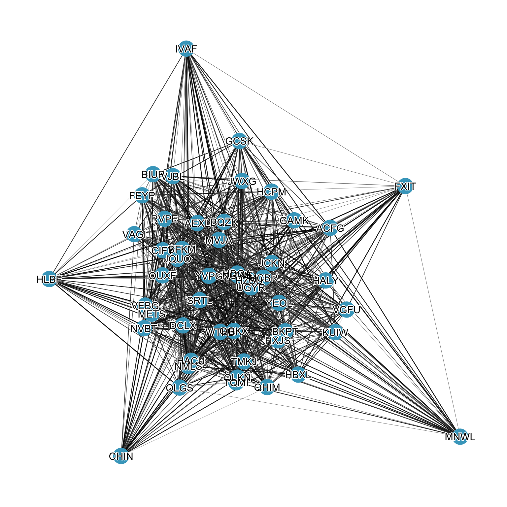
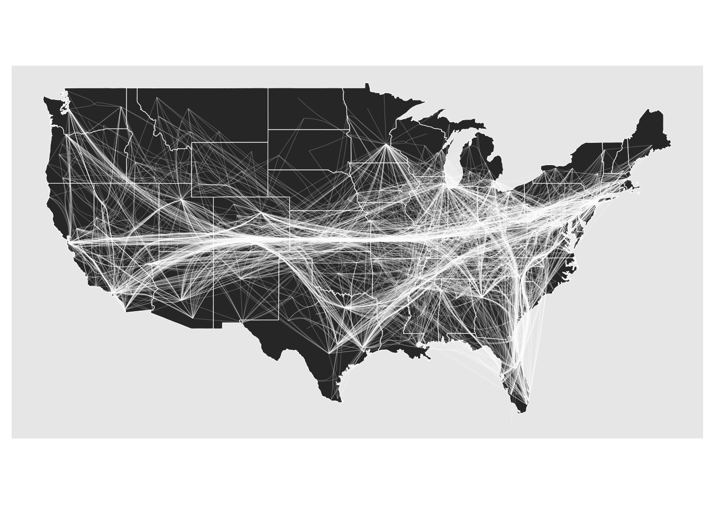
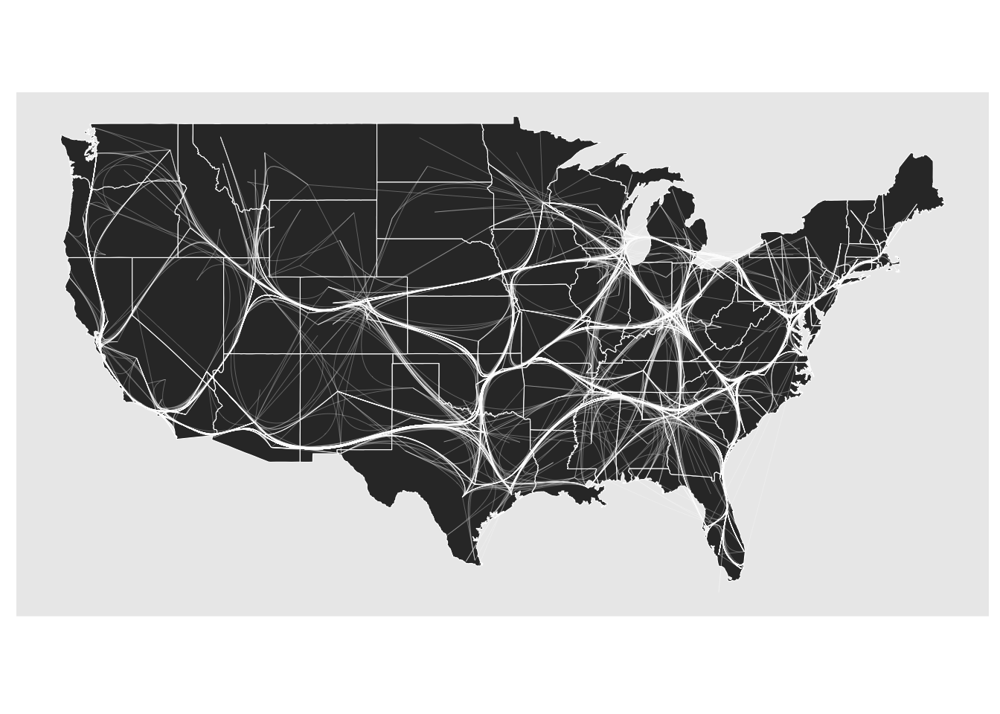

set.seed(665)
## create network with a group structure
g <- sample_islands(9, 40, 0.4, 15)
g <- igraph::simplify(g)
V(g)$grp <- as.character(rep(1:9, each = 40))
bb <- layout_as_backbone(g, keep = 0.4)
E(g)$col <- F
E(g)$col[bb$backbone] <- T12 Enhancing Visualizations
Everything that was covered so far should be enough to produce nice network visualizations, especially for scientific publications. However, ggraph has a lot more advanced functions/parameter settings to further enhance your visualization. If you are looking for something specific, it is always a good idea to read the documentation of the geoms.
12.1 use the ggforce
The ggforce package works pretty nicely with ggraph. You can, for instance, use the geom_mark_*() functions to highlight clusters.
ggraph(g, #|
layout = "manual",
x = bb$xy[, 1],
y = bb$xy[, 2]
) +
geom_edge_link0(aes(col = col), width = 0.2) +
geom_node_point(aes(fill = grp), shape = 21, size = 3) +
geom_mark_hull(
aes(x, y, group = grp, fill = grp),
concavity = 4,
expand = unit(2, "mm"),
alpha = 0.25
) +
scale_color_brewer(palette = "Set1") +
scale_fill_brewer(palette = "Set1") +
scale_edge_color_manual(values = c(rgb(0, 0, 0, 0.3), rgb(0, 0, 0, 1))) +
theme_graph() +
theme(legend.position = "none")
Of course you can also add a label to your clusters.
ggraph(g, #|
layout = "manual",
x = bb$xy[, 1],
y = bb$xy[, 2]
) +
geom_edge_link0(aes(col = col), width = 0.2) +
geom_node_point(aes(fill = grp), shape = 21, size = 3) +
geom_mark_hull(
aes(x, y, group = grp, fill = grp, label = grp),
concavity = 4,
expand = unit(2, "mm"),
alpha = 0.25
) +
scale_color_brewer(palette = "Set1") +
scale_fill_brewer(palette = "Set1") +
scale_edge_color_manual(values = c(rgb(0, 0, 0, 0.3), rgb(0, 0, 0, 1))) +
theme_graph() +
theme(legend.position = "none")
If you want to avoid node overlaps, you can use geom_node_voronoi(). So this is actually already implemented in ggraph, but originates from geom_voronoi_tile().
ggraph(g,
layout = "manual",
x = bb$xy[, 1],
y = bb$xy[, 2]
) +
geom_edge_link0(aes(filter = !col, col = col), width = 0.2) +
geom_node_voronoi(
aes(x, y, fill = grp),
max.radius = 0.4,
expand = unit(-0.5, "mm"),
colour = "black"
) +
scale_color_brewer(palette = "Set1") +
scale_fill_brewer(palette = "Set1") +
scale_edge_color_manual(values = c(rgb(0, 0, 0, 0.3), rgb(0, 0, 0, 1))) +
theme(
legend.position = "none",
panel.grid = element_blank(),
axis.ticks = element_blank(),
axis.text = element_blank()
) +
theme_graph() +
theme(legend.position = "none")
12.2 Small tricks for common problems
“How can I achieve that my directed edges stop at the node border, independent from the node size?”
This one has given me headaches for the longest time. No matter what I tried, I always ended up with something like the below plot.
## create a random network
set.seed(1071)
g <- sample_pa(30, 1)
V(g)$degree <- degree(g, mode = "in")
ggraph(g, "stress") +
geom_edge_link(
aes(end_cap = circle(node2.degree + 2, "pt")),
edge_colour = "black",
arrow = arrow(
angle = 10,
length = unit(0.15, "inches"),
ends = "last",
type = "closed"
)
) +
geom_node_point(aes(size = degree), col = "grey66", show.legend = FALSE) +
scale_size(range = c(3, 11)) +
theme_graph()
The overlap can be avoided by using the I() function from base R, which treats the entries of a vector “as is”. So we know that if a node has degree 5, it will be mapped to a circle with radius (or diameter?) “5pt”. Since this means, that you have no control over the scaling, you need to do that beforehand.
## this function is borrowed from the ambient package
normalise <- function(x, from = range(x), to = c(0, 1)) {
x <- (x - from[1]) / (from[2] - from[1])
if (!identical(to, c(0, 1))) {
x <- x * (to[2] - to[1]) + to[1]
}
x
}
## map to the range you want
V(g)$degree <- normalise(V(g)$degree, to = c(3, 11))
ggraph(g, "stress") +
geom_edge_link(
aes(end_cap = circle(node2.degree + 2, "pt")),
edge_colour = "grey25",
arrow = arrow(
angle = 10,
length = unit(0.15, "inches"),
ends = "last",
type = "closed"
)
) +
geom_node_point(aes(size = I(degree)), col = "grey66") +
theme_graph()
I would not be surprised though if there is an even easier fix for this problem.
“How can I lower the opacity of nodes without making edges visible underneath?”
One of the rules I try to follow is that edges should not be visible on top of nodes. Usually that is easy to achieve by drawing the edges before the nodes. But if you want to lower the opacity of nodes, they do become visible again.
g <- sample_gnp(20, 0.5)
V(g)$degree <- degree(g)
ggraph(g, "stress") +
geom_edge_link(edge_colour = "grey66") +
geom_node_point(
size = 8,
aes(alpha = degree),
col = "red",
show.legend = FALSE
) +
theme_graph()The solution is rather simple. Just add a node layer with the same aesthetics below with alpha=1 (default) and color="white" (or the background color of the plot).
ggraph(g, "stress") +
geom_edge_link(edge_colour = "grey66") +
geom_node_point(size = 8, col = "white") +
geom_node_point(
aes(alpha = degree),
size = 8,
col = "red",
show.legend = FALSE
) +
theme_graph()
Of course you could also use start_cap and end_cap here, but you may have to fiddle again as in the last example.
“How can I enhance readability of node labels in hairball graphs?”
Sometimes it is really hard to make labels readable when the network is very cluttered
g <- sample_gnp(50, 0.7)
V(g)$name <- sapply(1:50, function(x) paste0(sample(LETTERS, 4), collapse = ""))
E(g)$weight <- runif(ecount(g))
ggraph(g) +
geom_edge_link0(aes(edge_color = weight, edge_linewidth = weight), show.legend = FALSE) +
geom_node_point(size = 8, color = "#44a6c6") +
geom_node_text(aes(label = name), fontface = "bold") +
scale_edge_color_continuous(low = "grey66", high = "black") +
scale_edge_width(range = c(0.1, 0.5)) +
theme_graph() +
coord_fixed()Using "stress" as default layout
Here you can make use of the fact that the layout of the nodes are stored in a “hidden” data frame when a ggraph object is constructed. That means you can use other geoms from other packages. In this case, the shadowtext package as shown below.
ggraph(g, "stress") +
geom_edge_link0(aes(edge_color = weight, edge_linewidth = weight), show.legend = FALSE) +
geom_node_point(size = 8, color = "#44a6c6") +
shadowtext::geom_shadowtext(aes(x, y, label = name), color = "black", size = 4, bg.colour = "white") +
scale_edge_color_continuous(low = "grey66", high = "black") +
scale_edge_width(range = c(0.1, 0.5)) +
theme_graph() +
coord_fixed()
12.3 Edge bundling
gr <- edgebundle::us_flights
states <- map_data("state")
ggraph(gr, x = longitude, y = latitude) +
geom_polygon(aes(long, lat, group = group), states, color = "white", linewidth = 0.2) +
coord_sf(crs = "NAD83", default_crs = sf::st_crs(4326)) +
geom_edge_bundle_force(color = "white", width = 0.05)

ggraph(gr, x = longitude, y = latitude) +
geom_polygon(aes(long, lat, group = group), states, color = "white", linewidth = 0.2) +
coord_sf(crs = "NAD83", default_crs = sf::st_crs(4326)) +
geom_edge_bundle_path(color = "white", width = 0.05)

12.4 snahelper
Even with a lot of experience, it may still be a painful process to produce nice looking figures by writing ggraph code. Enter the snahelper.
install.packages("snahelper")The snahelper is an RStudio addin which provides you with a GUI to plot networks. Instead of writing code, you simply use drop-down menus to assign attributes to aesthetics or change appearances globally. One great feature of the addin is that you can adjust the position of nodes individually if you are not satisfied with their location. Once you are done, you can either directly export the figure to png or automatically insert the code to produce the figure into your script. That way, you can review the code and hopefully learn something from it. Below if a demo that shows its functionality.

To use the addin, simply highlight the variable name of your network within an R script and choose the SNAhelper from the Addins drop-down menu within RStudio. You can find more about the Addin on its dedicated pkgdown page
12.5 Misc
Some things that I frequently use are the following:
- change the
end_capingeom_edge_link()to end edges before reaching the node. This is helpful for directed edges to not make the arrows disappear. legend.positionintheme()controls all legends at once. If you don’t want to show a specific legend, useguide = "none"in the respectivescale_*function.- use
scale_color_viridis_c()andscale_color_viridis_d(). The viridis colour palette makes plots easier to read by those with colorblindness and print well in grey scale.